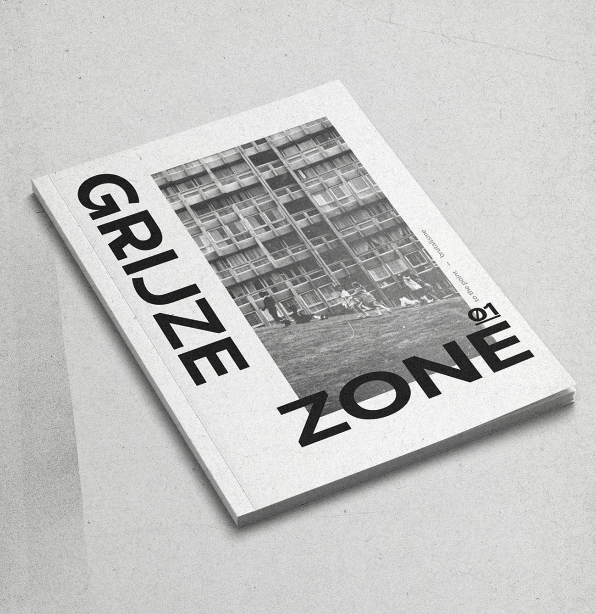
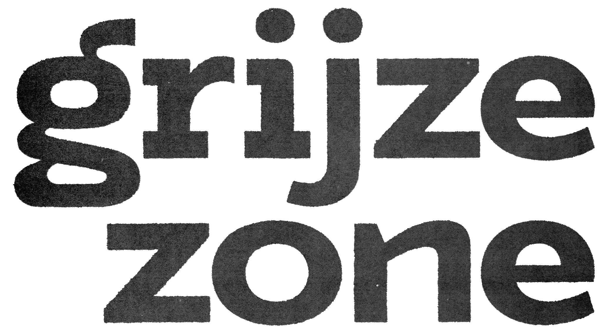

to the point.
visuele communicatie
een magazine over brutalisme
02/2020
het magazine 'grijze zone' is ontstaan vanuit het onbegrip voor brutalisme.
om het verhaal achter deze architectonische stijl te vertellen en de gedachtegang van architecten uit die tijd te visualiseren.
- pagina's
- techniek
- kaft
- papier
- oplage
- 32
- risograph en zeefdruk
- 250gr karton
- 170gr betongrijs karton
- 45 stuks